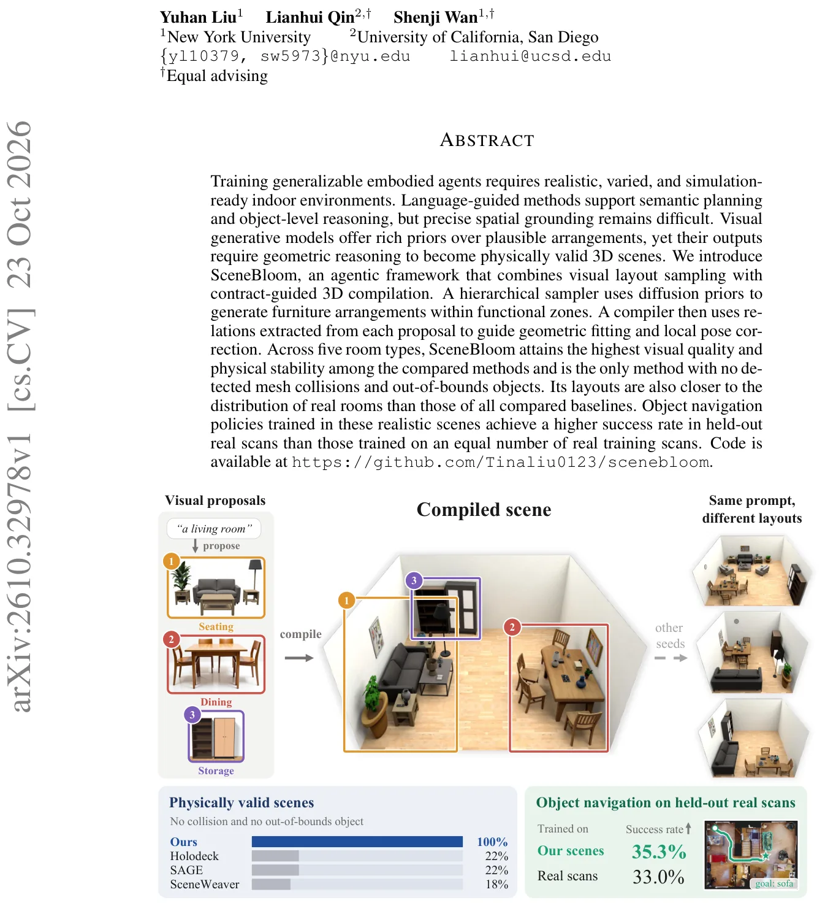
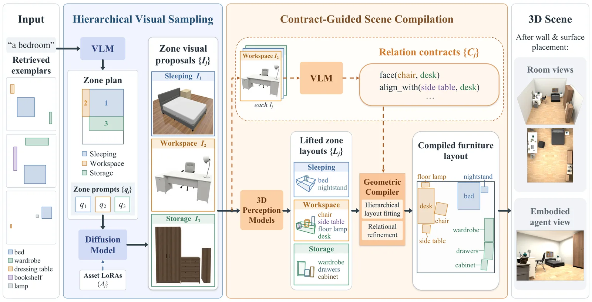
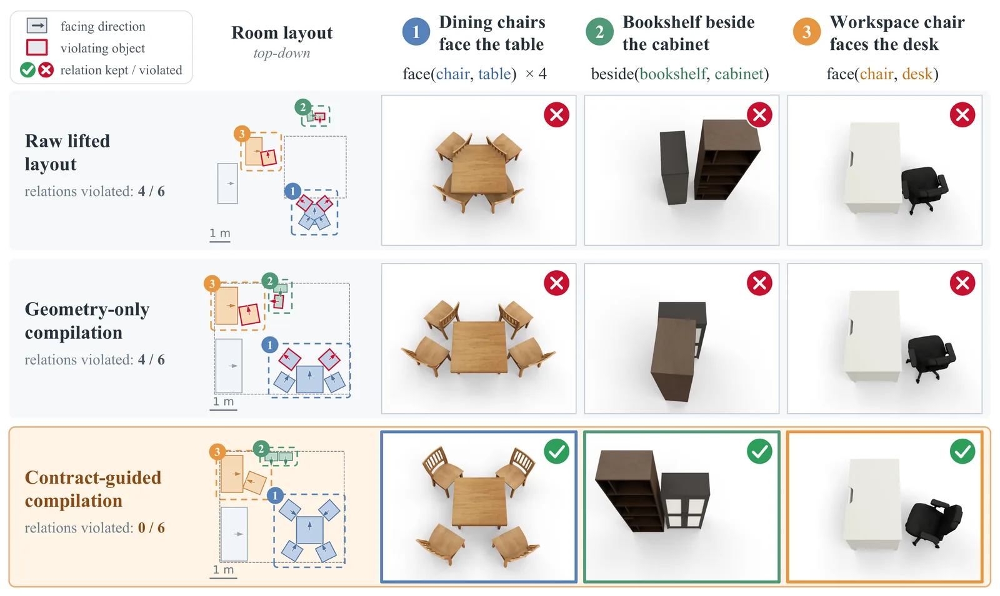
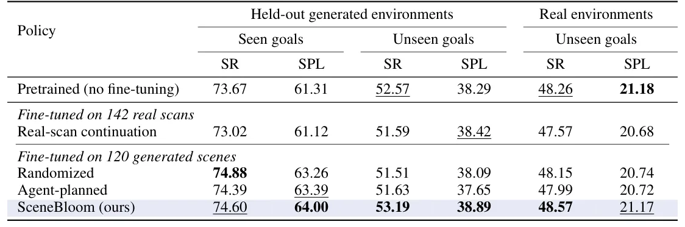

O Desafio da Generalização em Ambientes Sintéticos
Aprender agentes embodied (robôs ou avatares que interagem com o ambiente) requer exposição a uma diversidade massiva de cenários. O treinamento apenas em ambientes reais é inviável devido ao custo e à dificuldade de coleta. Por isso, geradores procedurais de ambientes sintéticos são essenciais. No entanto, gerar layouts que sejam ao mesmo tempo semanticamente plausíveis (fazem sentido funcionalmente) e geometricamente válidos (não há colisão de objetos, móveis não flutuam) é um problema aberto complexo.
Métodos anteriores tentam resolver isso usando regras manuais ou distribuições aprendidas de configurações 3D. Outros, mais recentes, usam modelos de linguagem (LLMs) para definir restrições espaciais ou agentes autônomos para iterar sobre a cena. Embora flexíveis, essas abordagens frequentemente acumulam conflitos: ao adicionar objetos um por um, as colisões se acumulam e a correção posterior pode quebrar relações funcionais importantes, como colocar uma cadeira virada para a parede em vez da mesa.
O paper SceneBloom, de pesquisadores da New York University e da University of California, San Diego, propõe uma divisão de responsabilidades clara. A ideia central é separar o que deve ser preservado (relações semânticas e funcionais) do que deve ser corrigido (poses numéricas exatas). Isso é feito através de dois estágios distintos: amostragem visual hierárquica e compilação 3D guiada por contratos.

Amostragem Visual Hierárquica: Planejar a Zona, Desenhar o Mobiliário
O primeiro estágio do SceneBloom foca na estrutura lógica da sala. Em vez de tentar gerar a sala inteira de uma vez, o sistema divide o espaço em zonas funcionais (ex: área de dormir, área de trabalho, armazenamento). Um Vision-Language Model (VLM) analisa a descrição da sala e, usando exemplos reais recuperados como referência, define essas zonas, especificando quais móveis devem estar em cada uma.
A inovação aqui está na geração das propostas visuais. Para cada zona, um modelo de difusão de imagens gera uma imagem 2D que representa o arranjo dos móveis daquela área específica. Diferente de métodos que geram texto ou restrições lógicas, o modelo de difusão usa um prior visual aprendido de grandes datasets de imagens. Isso permite capturar nuances de arranjo que são difíceis de codificar em regras manuais.
Para garantir que os objetos gerados na imagem correspondam a assets 3D reais disponíveis para a simulação, o sistema utiliza LoRA adapters (Low-Rank Adaptation) específicos para cada ativo do catálogo. Isso significa que a imagem gerada não é apenas uma ilustração artística, mas um blueprint fiel dos objetos que serão instanciados no ambiente 3D. A fusão de adaptadores permite que múltiplos objetos apareçam na mesma imagem sem interferência visual.

Compilação Guiada por Contratos: Da Imagem ao 3D Físico
Gerar uma imagem não garante validade física. Quando as imagens são convertidas para 3D (um processo chamado lifting), erros de profundidade e escala são comuns. Móveis podem ficar sobrepostos, inclinados de forma instável ou fora dos limites da sala. O StageBloom resolve isso no segundo estágio: compilação 3D guiada por contratos.
Antes de mover qualquer objeto, o sistema analisa as imagens de proposta geradas no estágio anterior. Um VLM extrai 'contratos de relação' (relation contracts) dessas imagens. Esses contratos são declarações semânticas como 'a cadeira deve enfrentar a mesa', 'a mesa lateral deve estar alinhada com a mesa principal' ou 'a luminária deve estar próxima ao sofá'. Esses contratos definem as relações qualitativas que devem ser preservadas.
Um compilador geométrico então ajusta as poses dos objetos 3D para que eles se encaixem na sala e respeitem esses contratos. A chave é que o compilador não tenta adivinhar a melhor posição; ele otimiza a posição numérica dos objetos (x, y, z, rotação) para satisfazer as restrições lógicas extraídas. Isso permite corrigir erros de lifting (como uma cadeira que ficou torta) sem perder a intenção do arranjo visual original (a cadeira ainda está voltada para a mesa).
Resultados: Qualidade Visual e Plausibilidade Física
Os autores avaliaram o SceneBloom em cinco tipos de cômodos: quartos, salas de estar, salas de jantar, banheiros e escritórios. A comparação foi feita contra três métodos base: Holodeck (que usa LLMs para restrições), SceneWeaver (agente autônomos com auto-reflexão) e SAGE (que usa críticos visuais e físicos).
Em termos de plausibilidade física, o SceneBloom foi o único método a produzir cenas sem colisões de malha detectadas e sem objetos fora dos limites (out-of-bounds). Além disso, as cenas apresentaram a maior taxa de estabilidade. Nos baselines, até 31% dos objetos grandes se moviam além do limiar de estabilidade, enquanto no SceneBloom esse número foi de apenas 3%. Isso ocorre porque o compilador resolve conflitos globalmente, ao contrário dos métodos que adicionam objetos sequencialmente.
Na qualidade visual, avaliada por métricas de realismo, funcionalidade, coerência de layout e completude, o SceneBloom também liderou. O SAGE, por exemplo, tendia a superlotar os cômodos, adicionando objetos até que superfícies ficarem cheias. O SceneBloom, ao gerar arranjos baseados em zonas funcionais, manteve um número razoável de objetos e relações funcionais claras (ex: cadeiras voltadas para a mesa de jantar).

Aproximação da Distribuição Real
Um ponto crucial para agentes embodied é que os dados de treinamento se assemelhem à distribuição de dados reais. Os autores mediram a Discrepância de Distribuição de Layout (LDD) usando uma métrica de MMD (Maximum Mean Discrepancy) contra dois datasets reais: Matterport3D e Scan2CAD.
Os layouts gerados pelo SceneBloom estiveram mais próximos da distribuição de quartos reais do que todos os baselines comparados. Isso sugere que a combinação de planejamento semântico (zonas) e prior visual (difusão) captura melhor a variabilidade e a estrutura dos ambientes habitados do que métodos baseados puramente em regras ou otimização de restrições textuais.
Transferência para Navegação de Objetos
O teste final foi o mais importante para validar a utilidade prática: treinar uma política de navegação de objetos (object navigation) usando os ambientes gerados. Um agente foi treinado do zero em cenas geradas pelo SceneBloom e testado em varreduras reais mantidas fora do conjunto de treinamento (held-out real scans).
O agente treinado nos ambientes sintéticos do SceneBloom alcançou uma taxa de sucesso maior do que um agente treinado em um número igual de varreduras reais do mesmo dataset. Isso é contraintuitivo e significativo: ambientes sintéticos bem gerados podem generalizar melhor do que dados reais brutos, possivelmente porque o SceneBloom oferece uma organização de layout mais coerente e livre de ruídos de aquisição real.
Abalações mostraram que essa vantagem vem da organização do layout. Se os objetos fossem colocados aleatoriamente dentro das mesmas salas, a vantagem desaparecia. Além disso, o fine-tuning (ajuste fino) do agente nos ambientes do SceneBloom melhorou ainda mais a generalização para objetivos não vistos.

Limitações e Considerações Finais
Apesar dos resultados promissores, o paper não discute extensivamente as limitações computacionais ou a escalabilidade para cenas extremamente complexas. O uso de modelos de difusão e VLMs é computacionalmente custoso, embora o processo seja descrito como mais rápido que métodos agênticos iterativos devido à geração não iterativa por zona.
Outro ponto é a dependência de um catálogo de assets 3D pré-definido. O sistema não gera geometria nova do zero; ele instancia objetos conhecidos. Isso é uma vantagem para simulação (assets otimizados), mas limita a diversidade absoluta de formas de mobiliário.
Em resumo, o SceneBloom apresenta uma arquitetura elegante que resolve o conflito entre plausibilidade visual e validade física ao desacoplar o planejamento semântico da correção geométrica. Ao usar contratos de relação para guiar a compilação 3D, ele produz ambientes que não apenas parecem reais, mas funcionam como tal para o treinamento de agentes embodied.
O que fica
- SceneBloom separa planejamento semântico (zonas) de compilação geométrica, usando contratos de relação para preservar funcionalidade durante a correção 3D.
- É o único método comparado a gerar cenas sem colisões de malha ou objetos fora dos limites, com alta estabilidade física.
- Agentes de navegação treinados em seus ambientes sintéticos superam aqueles treinados em um volume equivalente de dados reais em testes de generalização.
- A abordagem usa difusão visual com LoRA adapters para garantir que as propostas 2D correspondam a assets 3D utilizáveis na simulação.
Paper original: SceneBloom: Agentic Indoor Environment Generation with Realistic and Diverse Layouts for Embodied Learning
Comentários
Nenhum comentário ainda. Seja o primeiro.